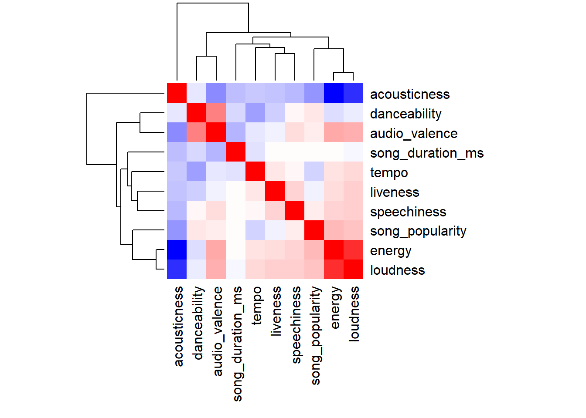

Clustering in R
Note that you can collapse the code using the button on the top right to focus on the analysis.
Introduction
Analysis
This analysis will focus on clustering songs based on their audio features. We will use the k-means algorithm to group songs into clusters based on their audio attributes. We will explore the data, fit the clustering algorithm, and evaluate the results using internal and external validation methods.
Dataset
The data is extracted from Spotify and includes various audio features of songs. The dataset contains information on 239 songs and their audio features, such as danceability, energy, and tempo.
Quarto
This analysis also demonstrates the utility of Quarto for sharing analysis and writing reports. Quarto allows for the integration of code, text, and visualizations in a single document, making it easy to create interactive and dynamic reports. We also make use of tabsets to compare different clustering solutions and visualizations.
EDA
We begin by outputting a table and inspecting the data.
There are 239 songs (rows) and the columns are as follows:
song_name: the title of the songartist: the artist of the songgenre: the genre of the songsong_popularity: the popularity of the songsong_duration_ms: the duration of the song in millisecondsacousticness: a measure of the song’s acousticnessdanceability: a measure of the song’s danceabilityenergy: a measure of the song’s energyliveness: a measure of the song’s livenessloudness: a measure of the song’s loudnessspeechiness: a measure of the song’s speechinesstempo: the tempo of the songaudio_valence: a measure of the song’s valence
Code
load(file = "data/data_spotify_songs.rda")
datatable(spotify)Scaling
We see above that the audio features are on different scales - for example, tempo ranges from around 64-206 while acousticness ranges from 0-1.
Note that the audio features are scaled to have mean 0 and standard deviation 1. This is important because features with different scales can have a disproportionate impact on the clustering algorithm. For example, if one feature has a range of 0-1 and another has a range of 0-100, the clustering algorithm may be biased towards the feature with the larger range. By using scaled features, we ensure that each feature has equal weight in the clustering algorithm.
Code
# interested in numeric audio features
numeric_spotify<-data.frame(scale(spotify[,c(4:length(spotify))]))Pairs Plot
The pairs plot provides a useful overview of the data and can give us a sense of clearly differentiated features and possible relationships among features in the dataset.
Code
pairs(numeric_spotify, gap = 0, pch = 19, col = adjustcolor(1, 0.4))Missing Values
We check for missing values in the dataset and find that there are none.
Code
sum(is.na(numeric_spotify))[1] 0Correlation Matrix
We can also look at the correlation matrix to see if there are any strong correlations between the features. This can help us identify redundant features that may not add much information to the clustering process.
Observations:
- High Positive Correlation: Features like
energyandloudnessshow strong positive correlations, as indicated by deep red squares. This suggests that louder tracks tend to be more energetic. - Negative Correlation: There is a noticeable negative correlation between
acousticnessandloudness, highlighted by the blue color. Tracks that are more acoustic tend to be quieter. - Neutral to Low Correlation: Features such as
song_popularitydo not exhibit strong correlations with most other musical features, implying that popularity may be influenced by factors outside of these measured attributes.
Analysis of Clusters:
Close Correlations: Features that join at lower heights (closer to the matrix) are more closely correlated. For instance, if energy and loudness merge at a lower height compared to other pairs, it suggests a strong positive correlation, as also indicated by the red color in the matrix.
Distant Correlations: Conversely, features that join at higher points on the dendrogram have less in common, showing either low correlation or high negative correlation.
Implications:
The clustering at the top of the matrix, shown with dendrograms, groups similar features based on their correlation coefficients, this suggests that dimensionality reduction could be beneficial for this dataset. By removing redundant features, we could simplify the dataset and potentially improve the clustering results.
Code
cor_matrix <- cor(numeric_spotify)
# visualise the correlation matrix
heatmap(cor_matrix, col = colorRampPalette(c("blue", "white", "red"))(100),
symm = TRUE, margins = c(10, 10))
Fitting the Clustering Algorithm
Now we produce two fits using 2 and 3 clusters.
Code
# produce the two fits below for 2 and 3 clusters.
fit2 <- kmeans(numeric_spotify, centers = 2, nstart = 50)
fit3 <- kmeans(numeric_spotify, centers = 3, nstart = 50)In our visualisations below, we show the pairs plot with the symbol and colour corresponding to the clusters. We can see that the clusters are well separated in both cases.
Code
symb <- c(15, 16, 17)
col <- c("darkorange2", "deepskyblue3", "magenta3")Code
par(mfrow = c(1,1))
pairs(numeric_spotify, gap = 0, pch = symb[fit2$cluster],
col = adjustcolor(col[fit2$cluster], 0.4),
main = "Clustering result - K = 2")Code
par(mfrow = c(1,1))
pairs(numeric_spotify, gap = 0, pch = symb[fit3$cluster],
col = adjustcolor(col[fit3$cluster], 0.4),
main = "Clustering result - K = 3")Internal Validation
Internal validation is used to determine the optimal number of clusters. It is particularly useful when the true number of clusters is unknown.
Calinski-Harabasz Index
Next we compute the Calinski-Harabasz index in order to find the optimal number of clusters.
This index is a measure of cluster cohesion and separation. It is defined as the ratio of the sum of between-cluster dispersion to within-cluster dispersion. A higher value of the index indicates better clustering.
\[CH(K) = \frac{B(K)}{W(K)} \times \frac{N-K}{K-1}\]
where \(B(K)\) is the between-cluster dispersion, \(W(K)\) is the within-cluster dispersion, and \(N\) is the number of observations.
A large value of this index for a given \(K\) indicates that the clustering is good as it has a high between-cluster dispersion and low within-cluster dispersion.
Code
K <- 10 # set K max
wss <- bss <- rep(NA, K) # initialise empty vectors
for ( k in 1:K ) {
# run kmeans for each value of k
fit <- kmeans(numeric_spotify, centers = k, nstart = 50)
wss[k] <- fit$tot.withinss # store total within sum of squares
bss[k] <- fit$betweenss
}
# compute calinski-harabasz index
N <- nrow(numeric_spotify)
ch <- ( bss/(1:K - 1) ) / ( wss/(N - 1:K) )
ch[1] <- 0 # the value of CH index for K = 1 is set to zero
plot(1:K, ch, type = "b", ylab = "CH", xlab = "K", pch = 19, col = "blue", main = "Calinski-Harabasz Index")From observing our results from the CH index plot above, the optimal number of clusters appears to be 2 or 3.
Silhouette Plot
We can further assess cluster coherence by looking at the silhouettes.
The silhouette value for each observation is a measure of how similar it is to its own cluster compared to other clusters. The silhouette value ranges from -1 to 1, with a value of 1 indicating that the observation is well matched to its own cluster and poorly matched to neighboring clusters. A value of -1 indicates the opposite.
The silhouette for observation \(x_i\) is defined as: \[ s(i) = \frac{b(i) - a(i)}{\max(a(i), b(i))} \]
We observe that K=2 seems best as the average silhouette is slightly larger for K=2. Additionally, we note that there are observations with negative silhouette in K=3 which indicates ambiguous cluster membership.
Code
d <- dist(numeric_spotify, method = "euclidean")^2
sil2 <- silhouette(fit2$cluster, d)
sil3 <- silhouette(fit3$cluster, d)
# produce the two silhouette plots
par( mfrow = c(1,2) )
plot(sil2, col = adjustcolor(col[1:2], 0.9),
main = "Spotify - K = 2")
plot(sil3, col = adjustcolor(col, 0.9),
main = "Spotify - K = 3")Based on this analysis, the appropriate number of clusters is K=2 with K=3 being a close second.
External Validation
External validation is used to compare the clustering results to a known partition of the data.
Visually Comparing Clustering to Genre Classification
Now we compare the clustering obtained to the classification into genres, providing a brief interpretation of the clusters.
Two Cluster Solution
Firstly we note that there are 3 genres, and hence using our obtained clustering with K=2 is not likely to capture the 3 genres entirely accurately.
The first figure below is a plot with symbol and colour corresponding to one of the three genres: rock, pop, and acoustic. The second figure is a plot with the symbol and colour corresponding to the two clusters.
If we flick between these two figures in the panels below, we can see that the orange and blue genres correspond to the orange cluster, and the purple genre corresponds to the blue cluster. This suggests that the orange and blue genres (rock and pop) have a great deal in common compared to the purple genre (acoustic).
Code
# plot with symbol and color corresponding to the genre
pairs(numeric_spotify[,c(3:6)], gap = 0, pch = symb[spotify$genre],
col = adjustcolor(col[spotify$genre], 0.4),
main = "Actual Genres")Code
# plot with symbol and color corresponding to the cluster
pairs(numeric_spotify[,(3:6)], gap = 0, pch = symb[fit2$cluster],
col = adjustcolor(col[fit2$cluster], 0.4),
main = "Clustering result - K = 2")Three Cluster Solution
We also found that K=3 had the second highest CH value and an average silhouette value quite similar to K=2 (0.32 vs 0.39). As there are 3 genres, we can also plot these 3 clusters beside the 3 genres to see if this clustering compares better than the 2 clusters we previously used.
If we flick between these two plots, we can see that there is a relatively good separation between the three genres.
Code
# plot with symbol and color corresponding to the genre
pairs(numeric_spotify[,c(3:6)], gap = 0, pch = symb[spotify$genre],
col = adjustcolor(col[spotify$genre], 0.4),
main = "Actual Genres")
Code
# plot with symbol and color corresponding to the cluster
pairs(numeric_spotify[,(3:6)], gap = 0, pch = symb[fit3$cluster],
col = adjustcolor(col[fit3$cluster], 0.4),
main = "Clustering result - K = 3")
Rand Index
Instead of visually comparing the clusterings obtained to the classification into genres as we have up to now, we can also use the Rand and Adjusted Rand indices to compare our clustering solutions to the reference partition (the 3 genres) and see how well they agree (a socre of 1 represents strong agreement).
For our first table with the 3 clusters, we can see that the rock and pop genres are somewhat mixed and misidentified by clusters 1 and 2. However, we note that the acoustic genre is almost entirely correctly identified in cluster 2. The rand index in this case is 0.77 and the adjusted rand index is 0.5.
Code
# cross tabulation between the partitions -- K = 3
tab1 <- table(fit3$cluster, spotify$genre)
print(tab1)
rock pop acoustic
1 1 5 90
2 23 56 6
3 35 19 4Code
classAgreement(tab1)$diag
[1] 0.2552301
$kappa
[1] -0.09483491
$rand
[1] 0.7744805
$crand
[1] 0.5007643For the second table with the 2 clusters, we can see that the rock and pop genres are captured almost entirely accurately by cluster 1. The acoustic genre is captured fairly accurately by cluster 2. The rand index is 0.73 and the adjusted rand index is 0.47.
Code
# cross tabulation between the partitions -- K = 2
tab2 <- table(fit2$cluster, spotify$genre)
print(tab2)
rock pop acoustic
1 58 75 10
2 1 5 90Code
classAgreement(tab2)$diag
[1] 0.2635983
$kappa
[1] -0.02585114
$rand
[1] 0.7342569
$crand
[1] 0.4741481Interpreting the Clusters
Finally we will provide a brief interpretation of the clusters when K=2 (the optimal solution we identified in our analysis)
First Cluster
The first cluster corresponds to the rock and pop genres - suggesting that they are similar in a number of features.
Second Cluster
The second cluster captures the acoustic genre. As we noted from the silhouette plot when K=2, there is little ambiguity between these two clusters which suggests that the acoustic genre is greatly differentiated from the rock and pop genres.
A Note on the Three Cluster Solution
We also note that when K=3, there is some confusion with clusters 1 and 2 misidentifying many of the songs in the rock and pop genres which suggests that they are not very clearly differentiated from each other compared to the acoustic genre. This aligns with our expectation that the rock and pop genres are more similar to each other than to the acoustic genre.